World-T3: Test-Time Training as Persistent Memory for Real-Time Video World Models
TL;DR Uses test-time training as persistent visual memory for consistent, real-time camera-controlled video generation.
I am a Ph.D. student in Computer Science at Brown University, working with Prof. Srinath Sridhar at the Interactive 3D Vision & Learning Lab.
I received my B.Eng. degree with honors in Computer Science from the University of Electronic Science and Technology of China (UESTC), where I was advised by Prof. Zhao Kang. Previously, I interned at Meta, Honda Research Institute, and Tencent AI Lab.
My research focuses on human-centric visual content generation and multimodal learning, with interests in generative models, computer graphics, and human interactions.
TL;DR Uses test-time training as persistent visual memory for consistent, real-time camera-controlled video generation.
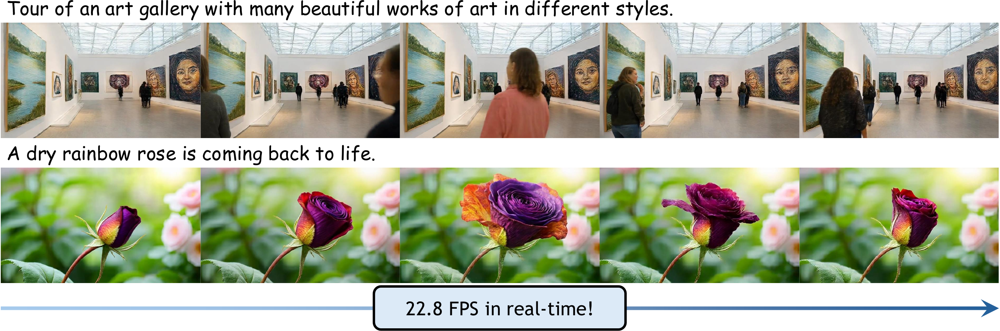
TL;DR We propose a real-time streaming video generation framework with multi-scale patchification and attention, achieving high-quality generation at 22.8 FPS on a single H200 GPU.
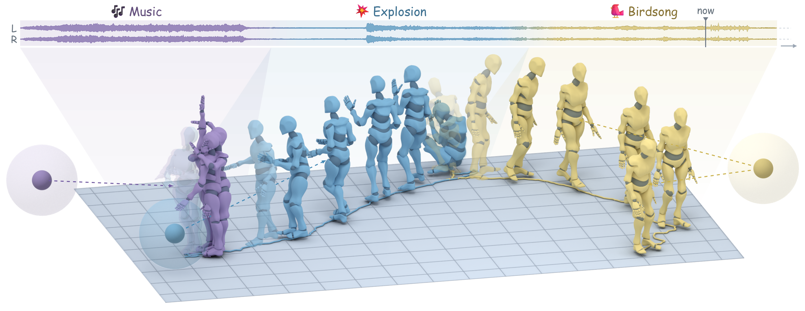
TL;DR Generates continuous human reactions to streaming spatial audio using a causal model with rehearsal training and spatial feedback.
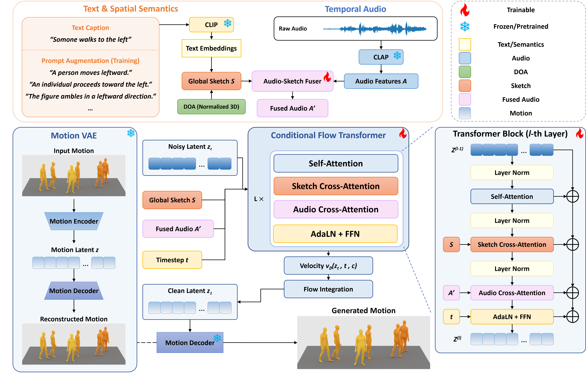
TL;DR We generate full-body motion from spatial audio and text with latent flow matching, and introduce the STAM dataset and tri-modal evaluators.
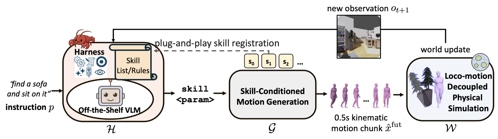
TL;DR We introduce a framework and benchmark that isolate VLM action decisions from motor-control errors to evaluate embodied action intelligence.
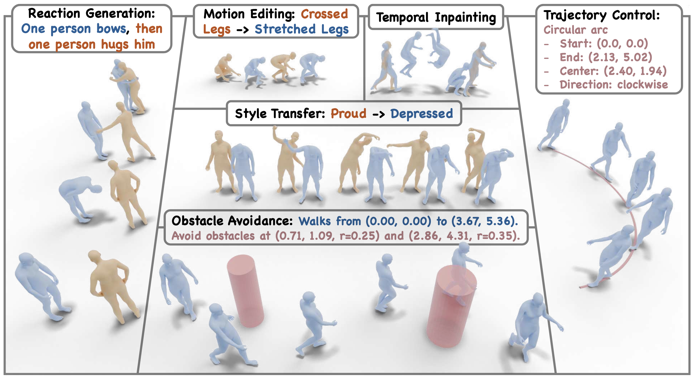
TL;DR We propose a generic framework to express various downstream tasks under a unified training paradigm and unlock the generative prior of single-purpose text-to-motion foundation model.
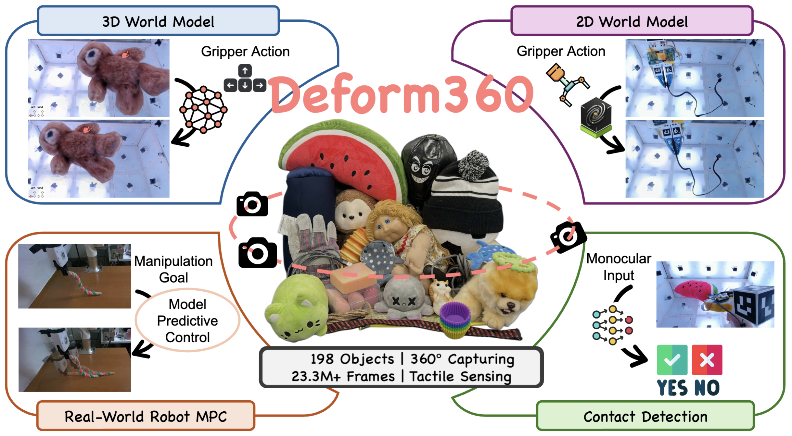
TL;DR We propose a massive multi-view visuotactile dataset, designed to provide a comprehensive benchmark for evaluating 2D and 3D world models in robotic manipulation.
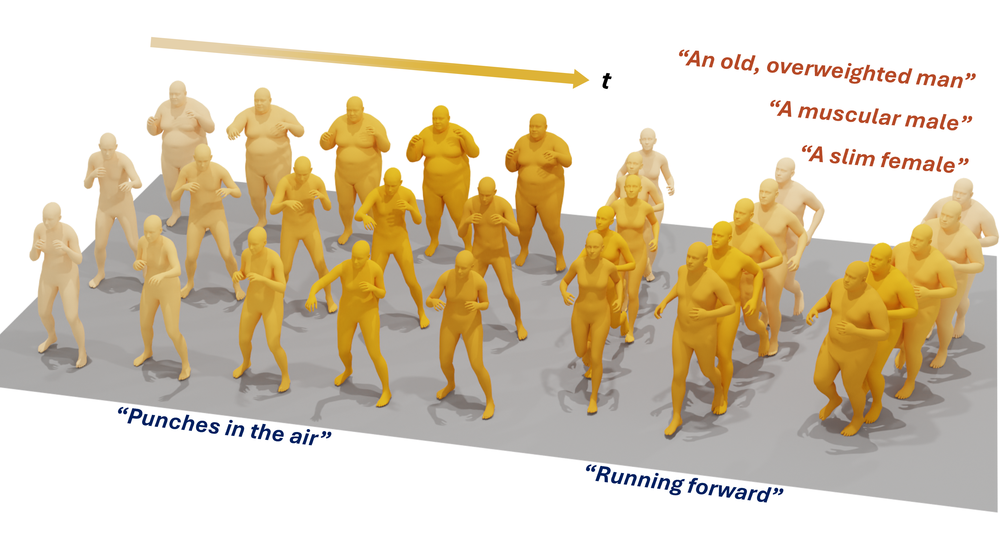
TL;DR We propose a joint motion-shape generation framework for identity-aware behavior modeling.
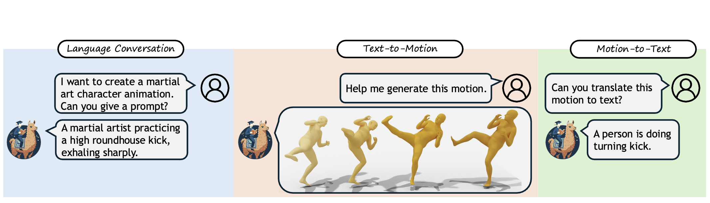
TL;DR We propose a generic framework to extend pretrained LLMs for human motion generation and understanding, while preserving the original text-only performance via a modality-specific Mixture-of-Transformers (MoT).
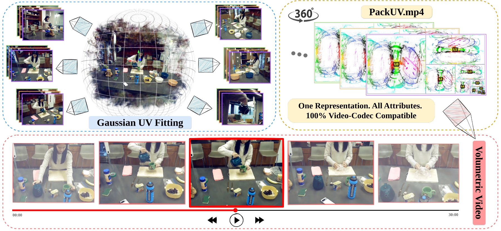
TL;DR We propose a new volumetric video representation and the largest multi-view 4D dataset.
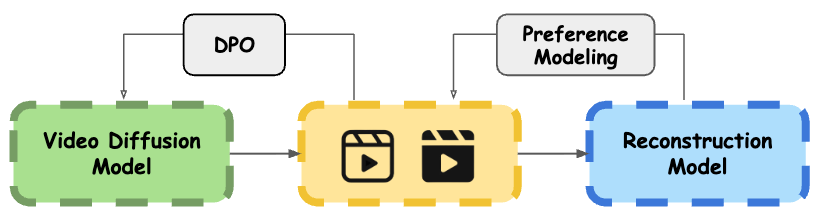
TL;DR We propose a video diffusion model post training solution to enhance 3D consistent.
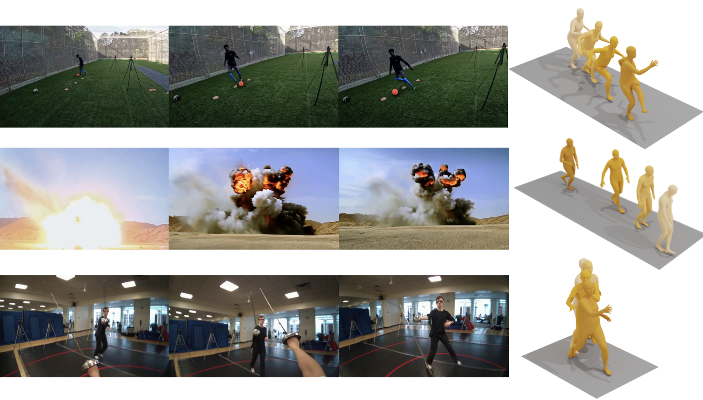
TL;DR We propose a real-time ego-perception driven human reaction generation model and a motion dataset with spatially aligned ego-video.
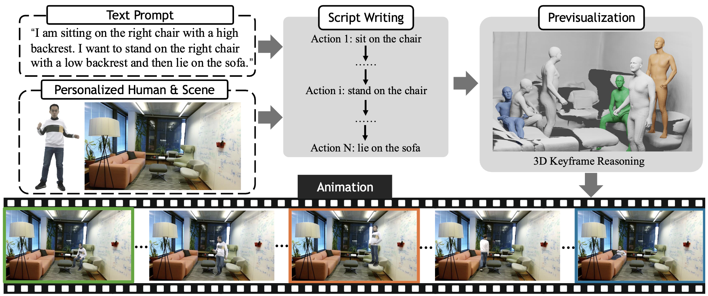
TL;DR We propose chain-of-frame prompting for VDM to generate plausible HSI videos without training.
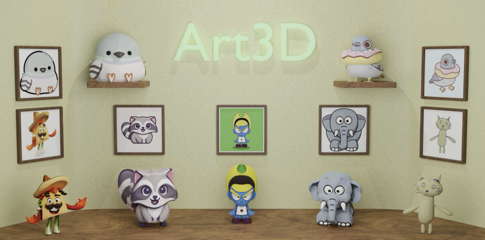
TL;DR We propose a training-free solution for reconstructing geometry from flat-colored images.
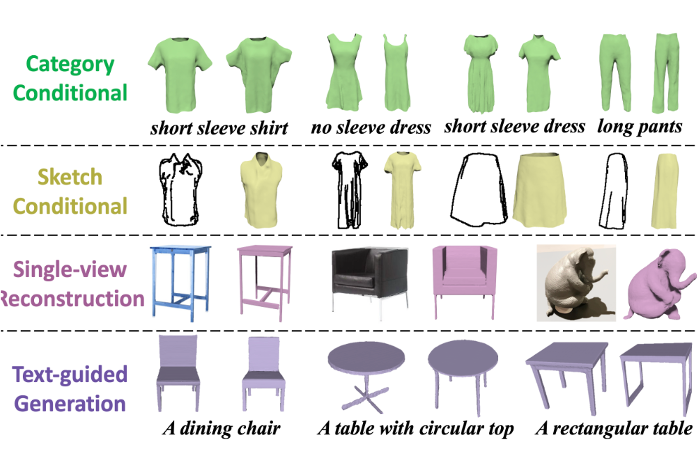
TL;DR We design a novel UDF-based latent diffusion model for shape generation.
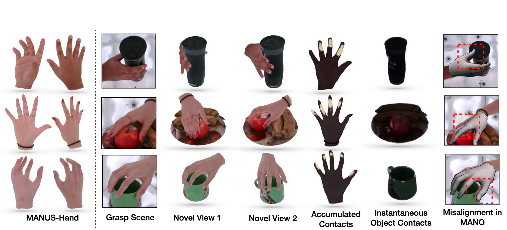
TL;DR We provide a new multi-view grasping dataset with contact annotation and articulated Gaussian hand model for the benchmark.
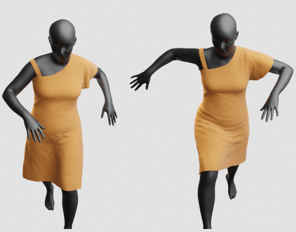
TL;DR We design adaptive anchors to predict 3D garment animation from a body motion sequence, especially for loose-fitting garments.
TL;DR We design a novel BP scheme to solve the gradient issue in Attention.
Meta Reality Labs
Supervisor: Dr. Alexander Richard
Cognitive Computing and Intelligent Decision Lab
Image translation, advised by Prof. Zhao Kang.